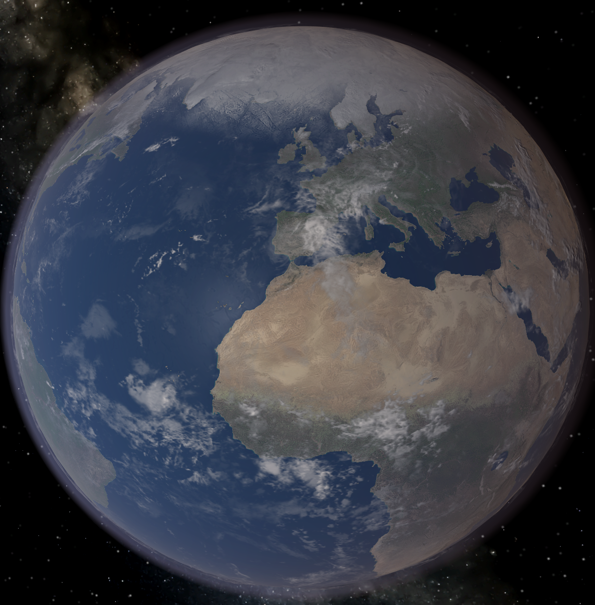

Ziemia to trzecia planeta od Słońca. Jest ona jedynym nam znanym obiektem w kosmosie na którym występuje życie. Mogło się ono rozwinąć dzięki wielu sprzyjającym czynnikom zarówno fizycznym, chemicznym jak i astronomicznym. Postrzegamy warunki do rozwoju życia właśnie przez pryzmat naszych lokalnych (patrz skala podobieństwa do Ziemi), lecz warto mieć na uwadze, że gatunki w drodze ewolucji mogą dostosować się do wielu różnych przeciwności. Ziemia posiada jednego naturalnego satelitę nazywanego Księżycem.
Obraz ZiemiSłońce widziane z "powierzchni" ZiemiPorównanie wielkości Ziemi i Księżyca